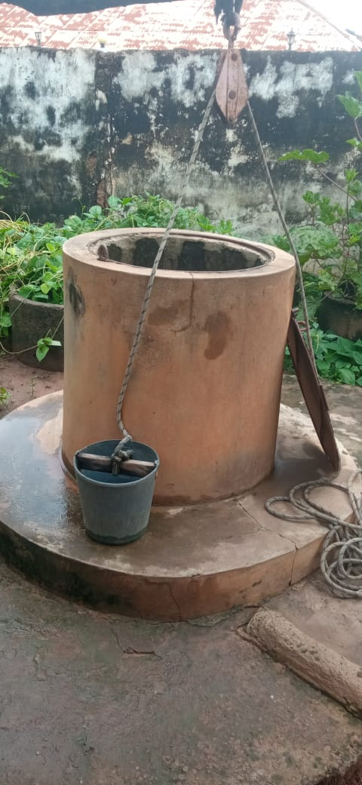
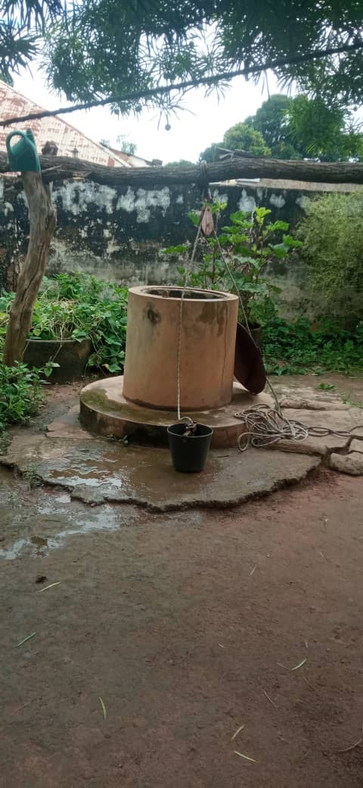
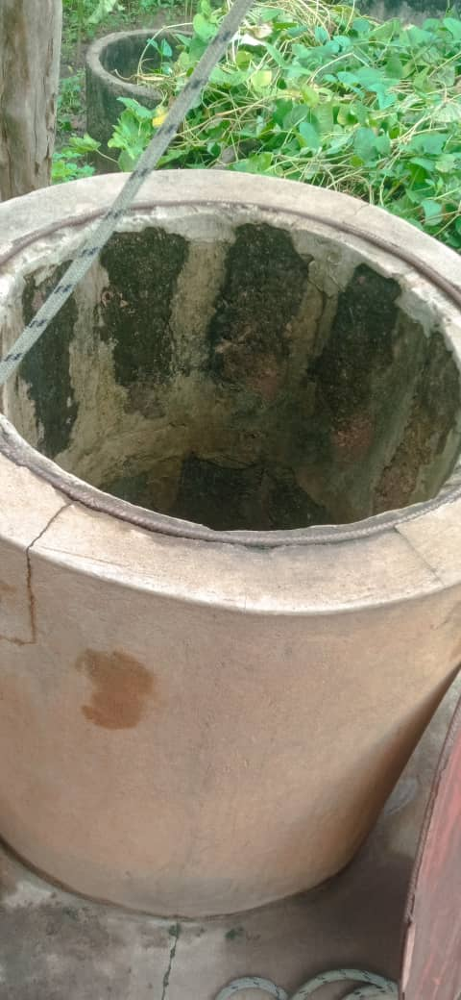
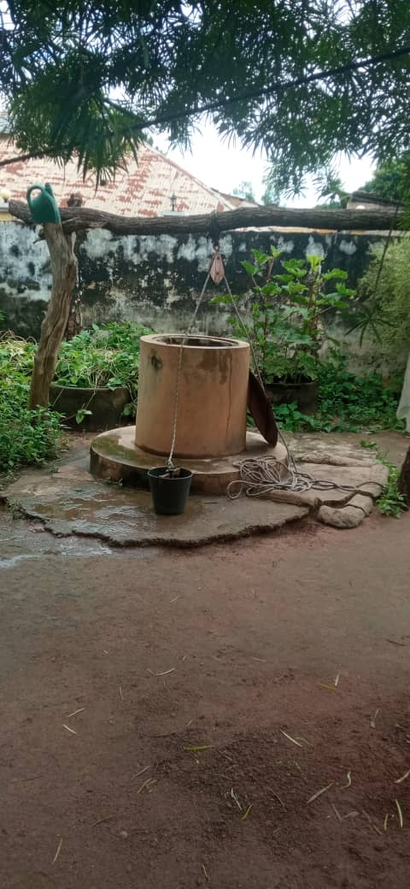
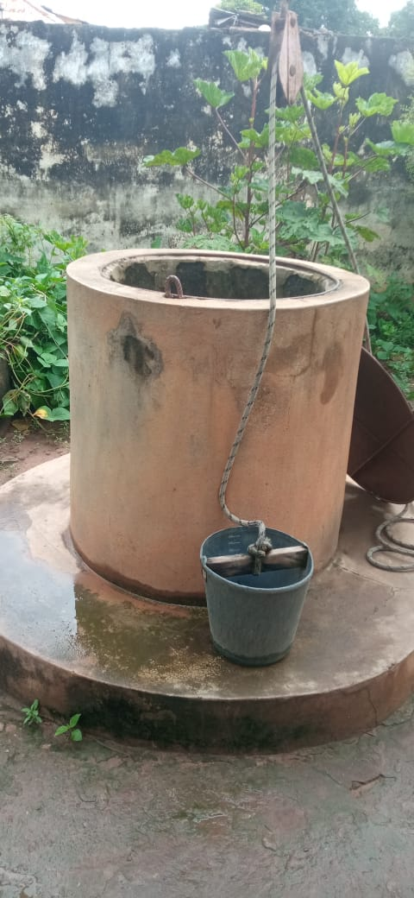
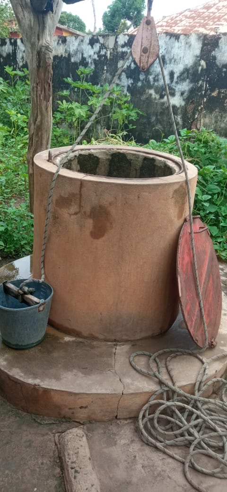

01
Wasser
Die Qualität des vorhandenen Brunnenwassers soll untersucht und dokumentiert werden.
Das erste Pilotprojekt soll am eigenen Haus des Initiators in Gabú, Guinea-Bissau, beginnen.
Der erste konkrete Standort befindet sich am eigenen Haus des Initiators in Gabú, Guinea-Bissau.
Am Haus befindet sich bereits ein Brunnen. Das Wasser wird derzeit noch manuell mit einem Eimer aus dem Brunnen geholt.
Dieser Standort bietet die Möglichkeit, die Projektidee unter realen Bedingungen zu untersuchen und erste praktische Erfahrungen zu sammeln.
Die Fotos zeigen den bestehenden Brunnen in Gabú – den Ausgangspunkt für die geplante Untersuchung und das Pilotprojekt.






Das Pilotprojekt soll eine konkrete und nachvollziehbare Grundlage für eine mögliche spätere Weiterentwicklung schaffen.
Die Qualität des vorhandenen Brunnenwassers soll untersucht und dokumentiert werden.
Es soll geprüft werden, wie Solarenergie für die Wasserförderung genutzt werden kann.
Das System soll hinsichtlich Technik, Kosten, Wartung und Alltagstauglichkeit bewertet werden.
Die Wasseraufbereitung soll nicht einfach nach Vermutung ausgewählt werden. Zuerst muss festgestellt werden, welche Eigenschaften das vorhandene Brunnenwasser tatsächlich hat.
Eine fachgerechte Wasserprobe soll entnommen und von einem geeigneten Labor untersucht werden.
Die Ergebnisse sollen anschließend als Grundlage für die Auswahl einer geeigneten Wasseraufbereitung dienen.
Die endgültige technische Lösung wird erst nach der Standortprüfung und Wasseranalyse festgelegt.
Der Standort, der Brunnen und die vorhandene Infrastruktur werden dokumentiert.
Das Brunnenwasser wird fachgerecht untersucht.
Auf Grundlage der Daten wird das technische System geplant.
Das geplante System wird installiert und unter realen Bedingungen getestet.
Die Ergebnisse des Pilotprojekts werden dokumentiert und ausgewertet.
Der Erfolg des Pilotprojekts soll anhand nachvollziehbarer Daten bewertet werden.
Vergleich der Wasserqualität vor und nach der Aufbereitung.
Verfügbare und täglich genutzte Wassermenge.
Leistung und Zuverlässigkeit der Solarversorgung.
Zuverlässigkeit und Wartungsbedarf der Anlage.
Investitions-, Betriebs- und Wartungskosten.
Praktische Nutzung und Erfahrungen der Bewohner.
Die folgenden Informationen sollen während der Bestandsaufnahme erhoben werden.
| Information | Status |
|---|---|
| Standort | Gabú, Guinea-Bissau |
| Brunnen vorhanden | Ja |
| Brunnen-Tiefe | Noch zu messen |
| Wasserstand | Noch zu messen |
| Anzahl der Nutzer | Noch zu erfassen |
| Wasserverbrauch pro Tag | Noch zu erfassen |
| Wasserqualität | Laboranalyse erforderlich |
| Technische Lösung | Nach Analyse festzulegen |
| Projektbudget | Nach technischer Planung |
Für die Umsetzung des Pilotprojekts suchen wir fachliche und praktische Unterstützung.
Unterstützung bei der fachgerechten Probenahme und Laboranalyse.
Beratung bei Pumpe, Speicherung, Aufbereitung und Wasserverteilung.
Planung und Dimensionierung der Solarstromversorgung.
Unterstützung bei der technischen Gesamtplanung des Pilotprojekts.
Beratung und Hinweise auf mögliche Förderprogramme.
Zusammenarbeit mit Unternehmen, Fachleuten und Organisationen.
Das Projekt befindet sich derzeit in der Planungs- und Entwicklungsphase.
Wir möchten keine technische Lösung versprechen, bevor die tatsächlichen Bedingungen vor Ort untersucht wurden.
Deshalb sollen Wasserqualität, technischer Bedarf, Kosten, Energieversorgung und Wartungsanforderungen zunächst untersucht werden.
Die technische Umsetzung soll auf den Ergebnissen dieser Untersuchungen basieren.
Das erste Projekt soll Erfahrungen liefern, bevor über eine mögliche Erweiterung entschieden wird.
Eine mögliche Erweiterung auf weitere Haushalte oder Gemeinden soll erst auf Grundlage der Erfahrungen, technischen Ergebnisse und tatsächlichen Kosten des Pilotprojekts geprüft werden.
Nein. Das Projekt befindet sich derzeit in der Planungs- und Entwicklungsphase.
Der erste Pilotstandort befindet sich am eigenen Haus des Initiators in Gabú, Guinea-Bissau.
Ja. Am Standort befindet sich bereits ein Brunnen, aus dem das Wasser derzeit manuell mit einem Eimer entnommen wird.
Das soll zunächst durch eine fachgerechte Wasseranalyse überprüft werden. Die technische Aufbereitung wird anschließend auf Grundlage der Analyse geplant.
Das steht noch nicht fest. Die geeignete Methode soll anhand der Ergebnisse der Wasseranalyse ausgewählt werden.
Das Projekt wurde von Adul Balde als persönliche Initiative entwickelt.
Derzeit handelt es sich um eine persönliche Initiative. Perspektivisch ist die Gründung einer eigenen Organisation vorgesehen.
Unterstützung wird insbesondere in den Bereichen Wasseranalyse, Wassertechnik, Solarenergie, Projektplanung, Fördermöglichkeiten und Partnerschaften gesucht.
Sie möchten mehr über das Pilotprojekt in Gabú erfahren oder über eine mögliche Zusammenarbeit sprechen?
Kontakt aufnehmen